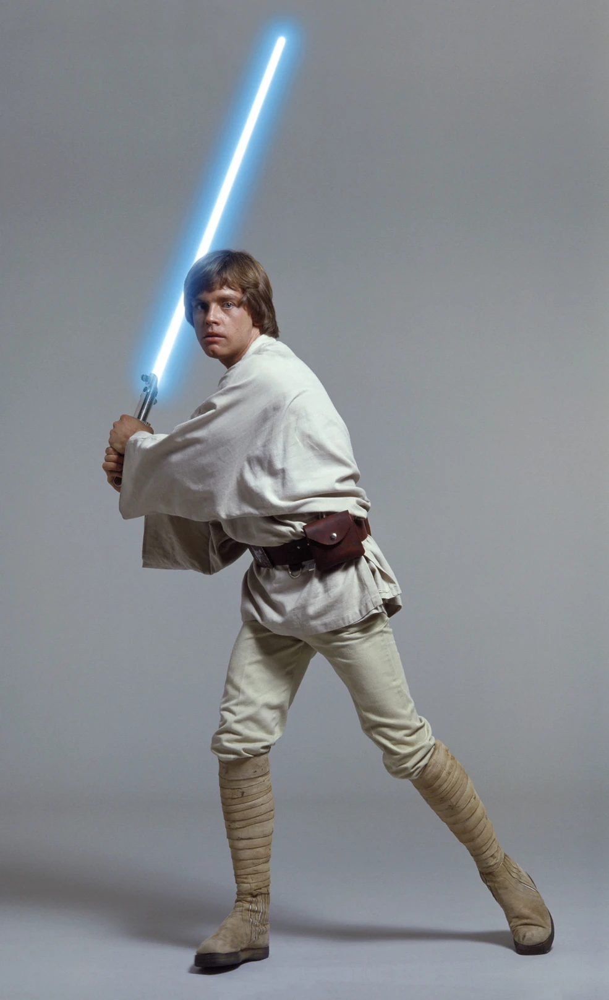
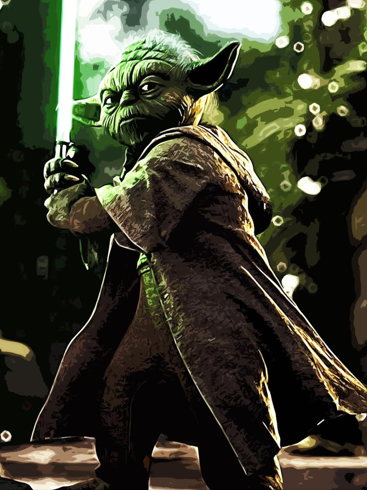

Bekannte Charaktere

Darth Vader
Der dunkle Lord der Sith.

Luke Skywalker
Ein mächtiger Jedi.

Yoda
Ein weiser Jedi-Meister.
Willkommen in einer weit, weit entfernten Galaxis.
Der dunkle Lord der Sith.

Ein mächtiger Jedi.

Ein weiser Jedi-Meister.

Der noch nicht der dunklen seite verfallene Jedi-Ritter

Die ehmalige Schülerin von Anikan

Ein mächtiger Jedi-Meister der den Dunklen Lord 2 mal besigte
Alle Star-Wars-Filme im Überblick.
Entdecke die verschiedenen Planeten.
Hier findest du Kontaktinformationen.